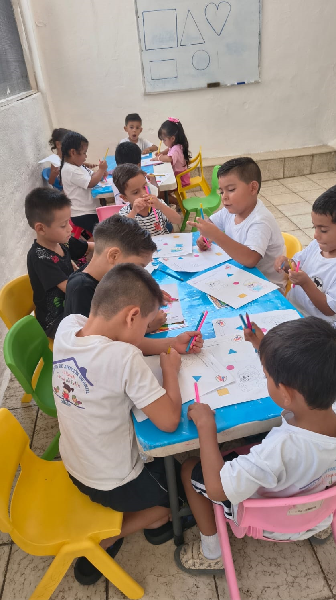
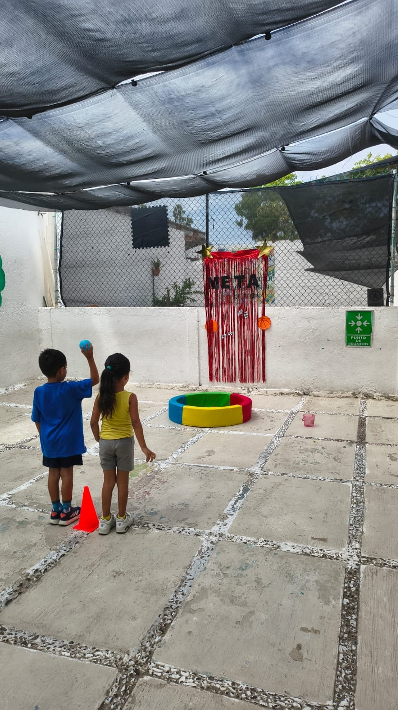
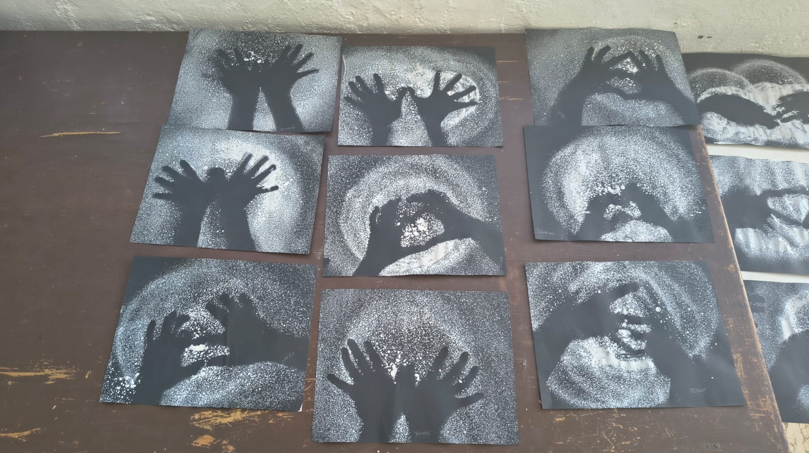

Aprender jugando
Experiencias de educación inicial y preescolar que acompañan cada etapa de su desarrollo.
CIHUATLÁN, JALISCO · DESDE LOS 6 MESES
Un espacio seguro y alegre para crecer, aprender y sentirse como en casa. Acompañamos a cada peque desde sus primeros pasos.

TODO LO QUE NECESITAS, EN UN MISMO LUGAR
Sabemos que elegir dónde estará tu peque es una decisión importante. Por eso
hacemos de su bienestar nuestra prioridad.
Experiencias de educación inicial y preescolar que acompañan cada etapa de su desarrollo.
Personal capacitado, circuito cerrado y póliza de seguro para mayor tranquilidad.
Dos comidas calientes y una colación nutritiva forman parte de su día.
Estancia y educación inicial y preescolar en una sola cuota. Pregúntanos por disponibilidad.
Su bienestar también se sirve en la mesa. Incluimos dos comidas calientes y una colación cada día.
Mira un poquito de nuestra casita →cariño
en cada
pequeño
paso
QUIÉNES SOMOS
En La Pequeña Casita de Belén creemos que los primeros años son una aventura maravillosa. Creamos un entorno cercano donde cada niña y niño puede explorar, convivir y aprender a su ritmo.
Somos un centro de atención infantil en Cihuatlán que une cuidado y educación inicial y preescolar, con un equipo capacitado que acompaña a cada peque con respeto y cariño.
Ven a conocernos ↗UN APOYO QUE PUEDE ACOMPAÑARTE
Algunas familias podrían acceder a un apoyo mensual de $1,500 para estancias infantiles. El acceso está sujeto a requisitos, disponibilidad y las reglas vigentes del programa.
El apoyo no es automático ni está garantizado. Consulta directamente los requisitos y disponibilidad vigentes con el programa Yo Jalisco.UN VISTAZO A NUESTRA CASITA
Cada día trae algo nuevo por explorar. Así se ven algunos de esos momentos llenos de juego y aprendizaje.


Cada actividad forma parte de un día de juego, aprendizaje y descubrimientos. Ven a conocer la casita en persona.
PREGUNTAS FRECUENTES
Te contamos lo esencial para dar ese primer paso con tranquilidad.
¿Otra pregunta? Llámanos ↗Recibimos niñas y niños desde los 6 meses. Contáctanos para confirmar disponibilidad y requisitos según la edad.
La estancia y la educación inicial y preescolar se ofrecen por una misma cuota. Consulta el costo vigente al solicitar informes.
La cuota incluye dos comidas calientes y una colación al día. Pregunta por horarios y detalles de alimentación.
Contamos con personal capacitado, circuito cerrado y póliza de seguro. Puedes solicitar más detalles cuando nos contactes.
Algunas familias podrían cumplir los requisitos. El monto, vigencia, disponibilidad y elegibilidad deben confirmarse con el programa oficial; el apoyo no está garantizado.
CONTACTO Y UBICACIÓN
Nos encantará saludarte y mostrarte nuestro espacio. Llámanos para resolver tus dudas o coordinar una visita.
Calle 16 de Septiembre #29
Cihuatlán, Jalisco
ESTAMOS A UN MENSAJITO DE DISTANCIA
Déjanos tus datos y te pondremos en contacto para contarte más y resolver tus dudas.
Cuéntanos un poquito y te contactamos pronto.